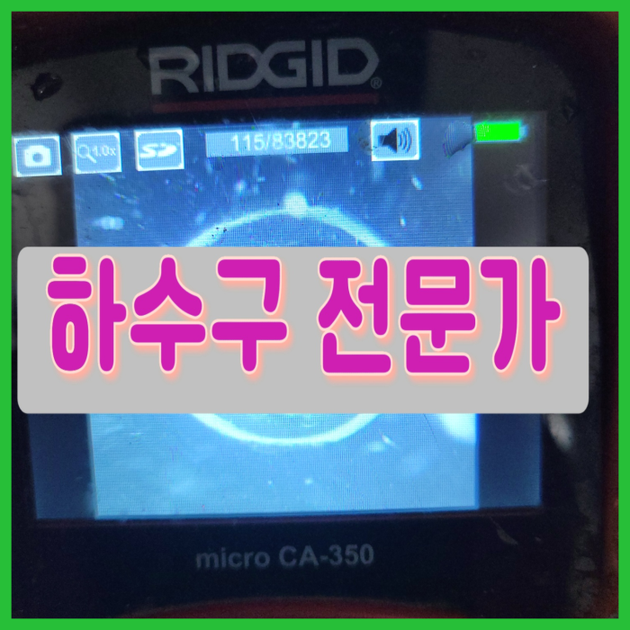
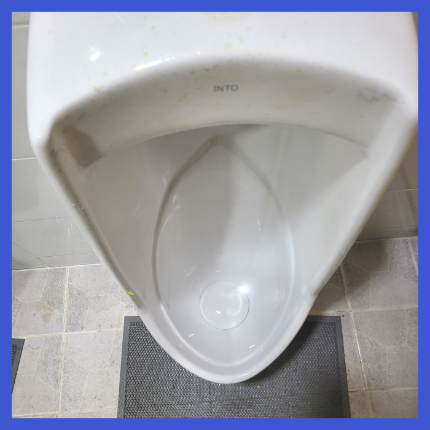
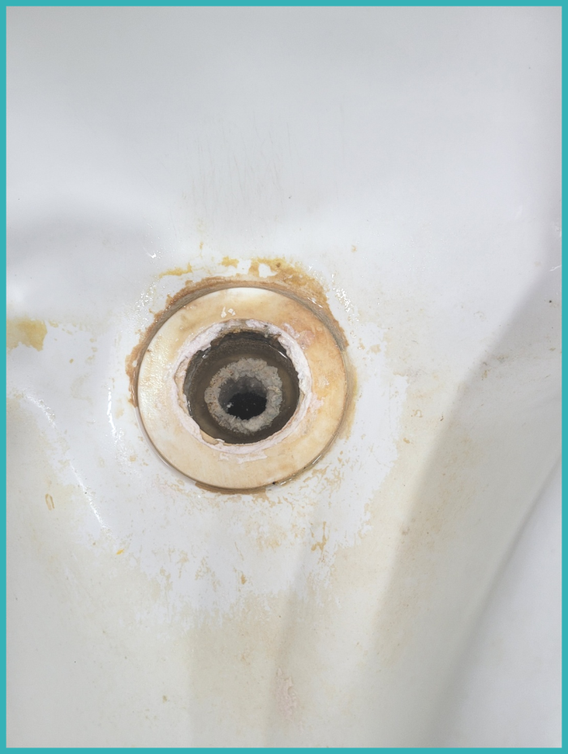
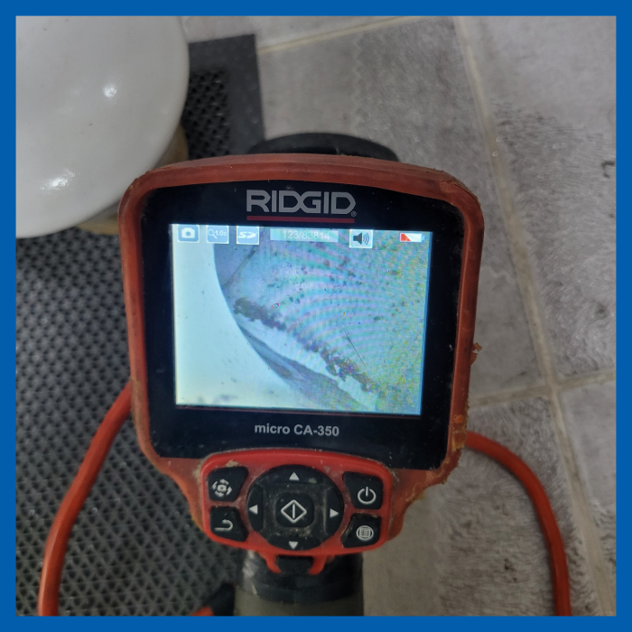
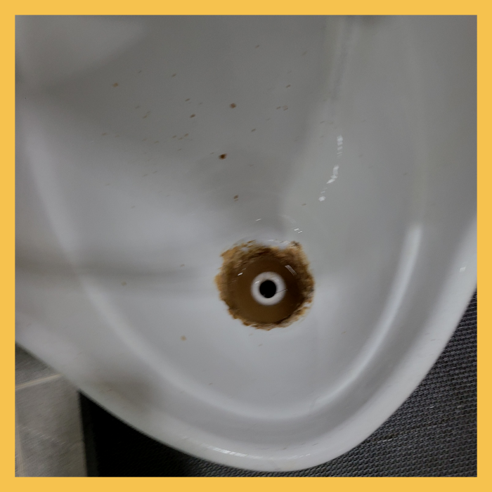
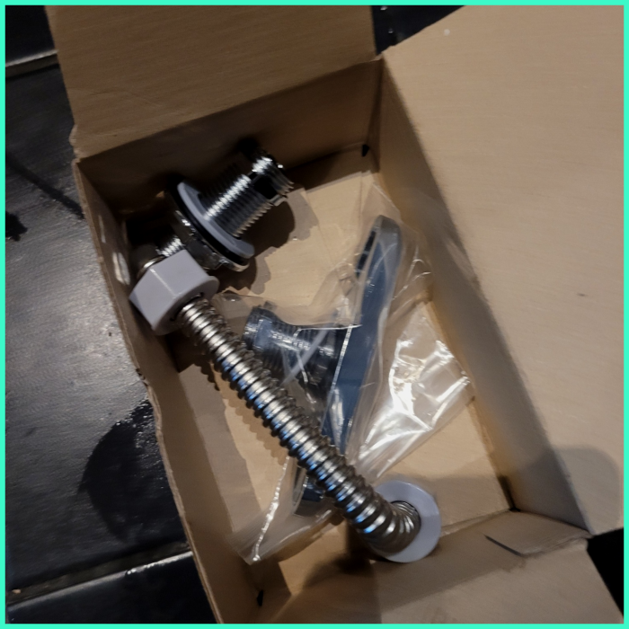

🏠 안산 중앙동씽크대막힘 백운동 하수구청소장비 부속수리
안산 중앙동 싱크대막힘 전문 시공 후기

📋 작업 개요
- 위치: 안산 중앙동, 중앙동, 안산
- 서비스 유형: 싱크대막힘, 변기막힘, 하수구막힘, 배관막힘, 누수수리, 역류해결, 뚫는업체, 배관청소, 고압세척
- 작업 일시: 2025. 1. 22. 22:02
- 업체명: 하수구수사대 (010-5615-2118)
🔍 문제 상황
반갑습니다!
설비전문업체 "하수구수사대"를 찾아주셔서 고맙습니다^^
물론 영원히 막히지 않는 배출구는 존재하지 않습니다. 얼마나 평소에 잘 관리하는지 또 발생한 즉시 조처를 할 수 있는지에 따라 깨끗한 환경의 차이가 발생할 뿐입니다.

🔎 원인 분석
💡 전문가 진단: 안산 중앙동 소변기막힘 고잔동 화장실 배관역류 뚫는업체
안산 중앙동 소변기막힘 고잔동 화장실 배관역류 뚫는업체
배수구배관의 내부 상태를 확인하기 위해 내시경을 사용합니다. 이를 통해 배수구배관의 상태를 정확히 파악하고 적절한 대응을 합니다. 고압 세척과 플렉스 샤프트를 사용하여 변기 청소를 진행하며, 필요 없는 경우에는 아랫층 천장으로의 누수 문제를 방지합니다.
이번 현장에서는 샤프트 장비로 하수관 내부를 스케일링해주는 작업을 하고 석션기로 백시멘트 조각들을 빨아들여서 꺼내면 모든 시공이 마무리되는 과정이었습니다. 백시멘트 이외에도 각종 모래와 분진 등이 많이 있었는데요.
배수가 원활하게 이루어지지 않고 역류하는 상황까지 발생하게 됩니다. 다행히 이번 고객님께서는 배수가 약간 진행되지 않을 때 연락을 주셔서 대처가 보다 빠르게 이루어졌습니다. 바닥 퇴수까지 모두 이물질이 올라온 것을 확인하고 다시 내시경 카메라를 통해 상태를 체크하였는데 이후 깨끗해진 퇴수을 확인할 수 있었습니다.

🔧 작업 과정
저희는 오랜 경력과 노하우를 통해서 전문 장비를 가지고 작업을 해결하고 있는 곳인 만큼 하수 막힘이 발생을 하게 되면 고객과의 빠른 상담을 한 후에 방문을 진행해 드리고 있습니다. 우리가 무심코 매일 사용을 하고 있는 하수배관은 잠시만 막히게 되더라도 아주 불편한 상황이 발생하게 될 수밖에 없는데요.
석션기를 이용하여 작고 단단하지 않은 이물질들을 우선으로 제거하였습니다. 하수작업 중간에 물을 틀어주면 압력을 이용하여 조금 더 용이하게 제거할 수 있습니다. 계속해서 제거를 해나가다 보니 더 이상 석션기로는 부족할 정도로 하수막힘이 발생한 곳을 발견할 수 있었습니다. 이때부터는 석션기로 흡입하는 것이 아니라 스케일링 작업을 진행해야 하기 때문에 전문기계를 교체해 주었습니다.
특히 주방에서는 사용하고 남은 음식물 찌꺼기나 기름을 버리게 되는 일이 많은데 이런 이물질들이 배출관 처리 시설까지 흘러가지 못한다면 배관을 막히게 하는 대표적인 원인이 됩니다. 배출관내부 상태를 직접 확인하기 어려운 만큼 만약 수상한 정황이 보인다면 빠르게 배출관전문 업체의 도움을 구하시길 바랍니다.
배관배관이 급하게 꺾이는 구조는 특히 모서리 쪽에 유속이 느려지는 부분이 생기면서 침전이 생기게 됩니다. 시간이 지나면 침전물 위로 기름때가 붙거나 이물질이 걸리면서 점차 물의 흐름을 방해하고 불편함을 느끼게 되는 것입니다. 특히 관이 좁은 경우 기름때로 인해 구멍이 상당히 좁아진 것도 볼 수 있습니다.
하수관 수리를한번맡기시고도 여러차례의뢰하시는 고객분들이계셔서 빈틈없게끔 도와드리고있으며 신용을중요하게 여기고있어요.
간혹 `전문성`을 앞세운 업체임에도 내시경 장비가 없어 원인 규명을 하지 못하는 사례도 있습니다. 내부 상황을 정확히 인지하지 못한 채 스프링 장비로 통수만 하고 철수하는 바람에 얼마 안 가 다시 배수관배관이 막힌 케이스도 있었습니다.


✅ 작업 완료
세척을 끝내고 배출구에 돌아가 많은 양의 물을 한 번에 부어보니 작은 소용돌이 모양을 만들며 빠르게 내려가는 것으로 확인되었습니다. 배출구내시경을 통해서도 외부까지 연결된 배출구배관 상태가 말끔해진 것을 체크하였고, 이후 마감 작업까지 꼼꼼하게 해드렸습니다.
#하수구막힘 #하수구뚫음 #하수구역류 #씽크대막힘 #싱크대역류 #오수관막힘 #하수구청소 #욕실하수구막힘 #변기막힘 #하수구뚫는비용 #싱크대수리 #화장실막힘




⚠️ 베란다 누수 및 방수 관리 방법
- ✅ 비가 많이 올 때 창틀 주변이나 아래층 천장에 얼룩이 생기는지 정기적으로 확인해 보세요.
- ✅ 우수관 주변 실리콘 마감이 들뜨거나 깨진 틈새가 있는지 손상 여부를 수시로 체크하세요.
- ✅ 베란다 바닥 타일의 줄눈(메지)이 소실되면 그 틈으로 물이 침투하여 누수가 유발됩니다.
- ✅ 누수 의심 증상 발견 시 방치하면 아래층 손실이 커지므로 즉시 전문가의 진단을 받으십시오.
💡 핵심 정리
- 확실한 장비 작업(내시경 점검 및 샤프트 스케일링)으로 원인을 뿌리 뽑습니다.
- 작업 후 1년 이내에 동일한 부위 재발 시 100% 무상 A/S 서비스를 보장합니다.
- 서울 · 경기 · 인천 전 지역에 24시간 언제든 긴급 출동할 수 있도록 항시 대기 중입니다.
❓ 자주 묻는 질문 (FAQ)
🚨 안산 중앙동 싱크대막힘 문제로 고민이신가요?
정확한 원인 진단과 확실한 시공으로 재발 없는 해결을 약속드립니다.
24시간 긴급 출동 | 서울 · 경기 · 인천 전지역 | 1년 내 재발 시 무상 A/S